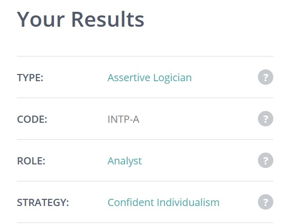
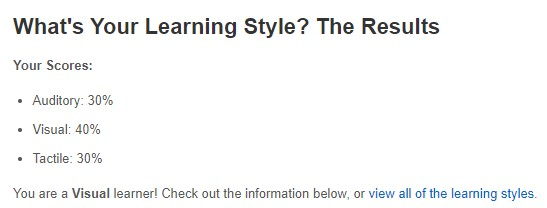
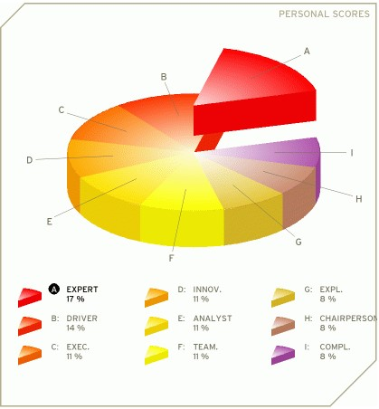
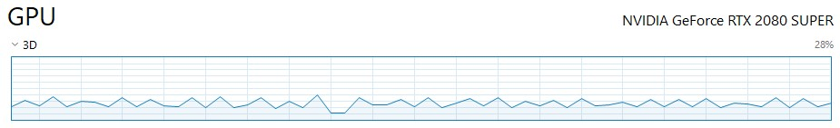

My personal info
Hello! My name is Lachlan Evans, and I do mechanical engineering here at RMIT under the student number s3660610. I'm in my final year and semester, so I figured I may as well branch out a bit more into the world of programming and IT with this course before I finish up.
Previously, I've only delved into programming through some tutorial sessions on my free time back at school, with some courses in my program having also touched the subject for a main part of the session, such as in mechatronics or manufacturing systems as well as having done programming as another elective, like this IT one.
Having lived in the Victorian alpine countryside for most of my life, I found living in such a big city a little fascinating for the years I was attending university, though when COVID-19 hit, I moved back to my hometown with everything becoming online now. While I've always kept my options open and have not offically locked in any post-graduate options next year, I have been planning to go further into a more systems-oriented career as opposed to a manufacturing-based one that I was on the fence about before.
My interest in IT
I've always had some interest in programming and I've been messing around with HTML as well as Javascript as far back as in my earlier school years. While I haven't done any large-scale projects related to IT yet, I often experimented with Javascript and practiced it, jQuery, HTML and CSS on my own time using online resources such as W3Schools and Codecademy.
I came to RMIT so that I could further advance my studies and learn in a new environment, since living in a very rural section of Victoria is a very different experience compared to how it is in the city. However, given the current COVID-19 situation since last year, I've since moved back. Although I'm doing an engineering course, I want to branch my knowledge out more towards programming in order to increase my versatility and viability in employment. Furthermore, the coursework I was given in my program allowed me to operate machines using Arduino circuitry and discover how things work internally, such as gears and hardware as well as 3D Modelling using engineering design tools such as Fluent and CATIA.
My personal ideal job
Initially, I was well on the road to looking out for engineering pathways which would've complemented my studies and overall degree, however given the circumstances of the pandemic I have felt as though it is important to further branch out into a career which allowed me to at least have some capability of working online, which IT is known to encourage and help with. Thankfully, mechanical engineering is a very versatile degree, and it has helped me learn a variety of subjects helping me out with finding the pathway I ultimately want to choose, such as physics, mathematics, chemistry, design, machinery and of course, programming.

The job details the handling of on-premises software for HP devices as well as the cloud and business-related practices. This is one of the career pathways I feel is ideal for me, because it relates to the handling of network infrastructure and handling of IT and software issues while also being inclusive of a lot of what I've learned as an engineer, in particular troubleshooting and ensuring that servers, HP clouds and other matters in the network work as intended, which is something I would find myself particularly enjoying as it is largely problem solving; something which I have done in my maths, physics and programming courses before plenty of times. Additionally, it's located in the somewhat remote New South Wales regional city of Lismore, far enough from Brisbane and Sydney so that I can continue enjoying the countryside; it's much smaller than say, Wodonga.
However, this particular listing does require at least five years of experience in a similar field, so it will take a bit of prerequisites before I reach that point. However, there are some methods I have thought which may help benefit my chances in finding a job like this:
- Increasing my knowledge in software and its maintenance. Increasing my understanding of programming languages such as C and Python especially. Granted this industry will have its own variation of a code, though it wouldn't be extremely difficult to translate my understanding of numerous coding languages into another. I can work on this one as a hobby.
- Ability to keep notes and recording of past information and feedback. Generally I keep meeting minutes anyway, so this is something I'm already used to.
- Handling maintenance and register/backup checks - from experience I've learned to keep a backup handy in case a great deal of data is lost - especially as I've accidentally lost a chunks of progress from my personal pastimes, so I know to make sure of this.
- Able to solve downtime problems as fast as possible - which is something I will get if I go into cybersecurity as well.
- Network security which I can get into and practice at some point between then and now as part of my five years.
Generally I've already worked in the past with flexible hours and entering the workplace on short notice as well as adapting to change, so requiring me to come in off-normal hours is nothing new to me.
Personal profile/test results
Myers-Briggs: INTP-A

EducationPlanner's Learning Style test: Visual

123Test's Team Roles Test: The Expert

A lot of this is unsurprising, as I've done similar tests over the years before with similar results. The INTP result mainly means I have a preference for learning new things and being in my head all the time, which is mostly true. Considering the fact I work best remotely with the occasional deadline I need to meet, so long as I have a goal in mind and some passion I should be able to complete it quickly with a bit of reading and information. The visual learning result is generally simply because I often follow diagrams and infographics as opposed to hearing about it and making my own illustrations as well. As for the last test which focuses on going a task solo to the best of one's abilities, it's only true in the sense that I like to stick to my part first, while the second highest role, the driver, is partially true in that I'll often try to get a move on when I'm done with my part and try to motivate others if we're on the clock.
If there's any indication of what these test results factor in how I act in a group, it would be that I don't talk very much until I feel I need to, and I'll just do what's being asked of me so I keep my parts satisfactory before I move on to the parts the other members are doing to help out. I believe I do best in a situation where I'm not calling the shots or being in a leadership situation, though while I'm not bad at leading a team, keeping plans in mind or splitting tasks between members, it's more of a preference to let someone else lead while I occasionally pitch in if necessary.
Generally, when forming a team I often wait for one to have already been made before I jump in - three or four members is the optimal number for a research or programming project in my opinion. It's not a matter of shyness, I just want to make sure that there's enough people to make sure there can be enough talk amongst the group about progress. It's easier to talk to a group as opposed to reporting to only one peer.
Of course, these are generally held with a very fine grain of salt. Many people I've known who have taken an MBTI test have gotten very different results each time so it's generally just a small indication of your state of mind at the time being, and not a concrete detailing of a specific personality.
Project idea
My project idea is to create or at the very least put onto paper a troubleshooting assistant for the PC which helps detect a slow or freezing application and find out why it is doing such in order for the user to help rectify the cause though usage of guides that change based on the diagnosed problem in order to be more user-friendly to those less savvy with computers by showing and giving graphical data of the problematic app's uptime with that of the RAM, GPU and so forth while giving a small detail as to what may be causing it. To summarise, it’s a program that tries to find a root problem and explains how to handle it better without being overly complicated.
While Windows does have a troubleshooter, it's generally limited to issues on the PC itself such as sound quality or internet connection as opposed to the applications themselves (beyond the infamous "X has stopped working"), meaning it often just leaves no explanation as to why a window closed abruptly or gives any guide beyond a convoluted wall of text that is easy to miss details. Every now and then I'll come across an application or a game that will begin having issues with the PC and suddenly crash or freeze without Windows even noticing. Oftentimes it's due to an already slow or weak PC which could be explained by the program that the specification requirements of the application exceed that of the computer's, but it could be due to a memory leak, buffer overflow or the application trying to bring in files that never existed.
The description of the application would be that it can detect performance in a similar vein to the Task Manager or some antiviruses, though it does not scan files and isn't constantly active (it can be easily disabled or turned off), instead it would check and record the response time of a slow application and compare it with what was going on with the PC's GPU and memory up until it crashes or gets turned off, allowing for an infographic timeline during the window's uptime with some speculations as to why it happened. Think of it like a recording application like OBS or Xsplit where instead of recording videos and audio, it records how the computer's specs react to applications and outputs easily digestible information compared to the Task Manager or especially the Resource Monitor. If the troubleshooting assistant detects what it believes to be a memory leak through a sudden or continued high RAM usage that is rising, it will advise the user to check it to see if it's the reason behind any unintentional slowing, or simply warn in an unintrusive way. It could also include the CPU temperature as well as any averages on RAM usage during the game, browser or other window's properties to show if the RAM or GPU is increasing in an abnormal fashion during its runtime to show to any non-tech savvy PC users that there was an issue when running, or comparing it to any times it was unresponsive or crashing. It can be used to track performance for a certain window only while it's up, or simply the PC as a whole to compare specification requirements and load on the PC.

As seen above from the Task Manager's monitoring of the GPU when Minecraft is running in the background, it only shows the past minute's worth of usage over the course in a nonspecific fashion. If I wanted to find out what apps were on during this time as well as if any were opened or closed during it, I would have to remember it or be recording it, or using some other app that also monitors and displays GPU data but doesn't elaborate besides the infographics. The general idea for this would be to show that if this graph were to rise substantially for no apparent reason and against what the generally calculated average of a particular application does, it would respond and try to tell the user that there may be a memory leak or overflow somewhere and that it might be important to look at after the session's over or maybe if it crashes. If a game I'm playing has been having framerate "hiccups" or occasionally freezing but I cannot look at the data yet, I can wait until the game's finished so I can look at what the app had to say.
Skills required in creating this project would mainly be understanding the code behind using it which will likely be in a C or C++ or possibly Python format, knowing how to link the PC's numerical data to the variables of the app, knowing how to convert and convey this data in a less complicated way, being able to create graphical data and FAQs easily for the less experienced with computers to ensure they understand. Additionally, the intent would to be to ensure it is low-key and unintrusive so that that it is not the ironic cause of a computer slowing down, which in some cases Task Manager has done before.
The outcome could benefit not only beginner computer users, but also any intermediate programmers who want to see what in their code is causing issues, whether it is startup or somewhere in their code that is impacting their computer when running a prototype. On top of this, it will allow users to find an easy way of finding out what they can and cannot run if they're trying to push the boundaries of their computer's limits using heavy-performance games, like trying to play PUBG on an 8GB RAM if the slowing effect wasn't obvious enough. It can also help with game optimisation when making one, in order to see how much resources get used over time.